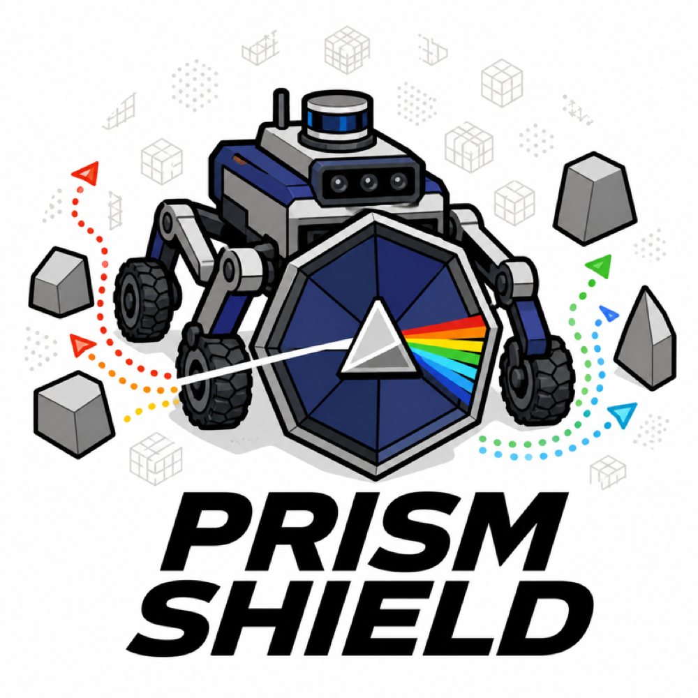
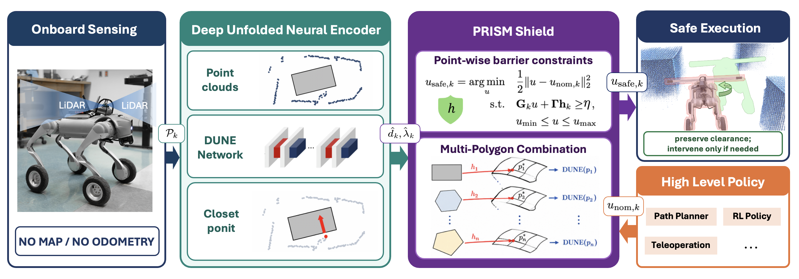
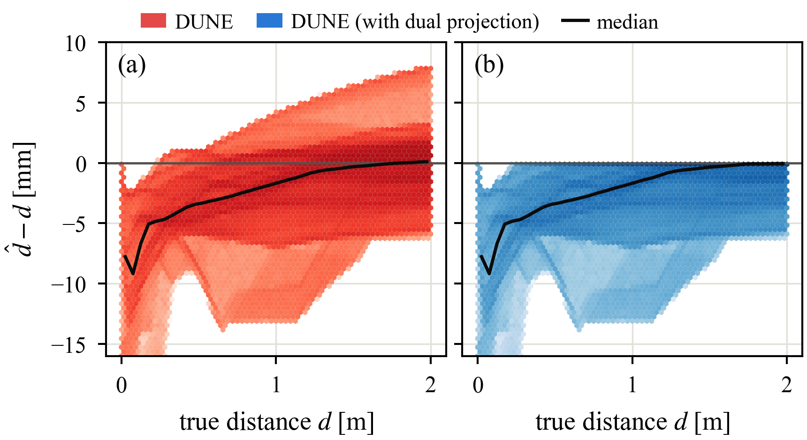
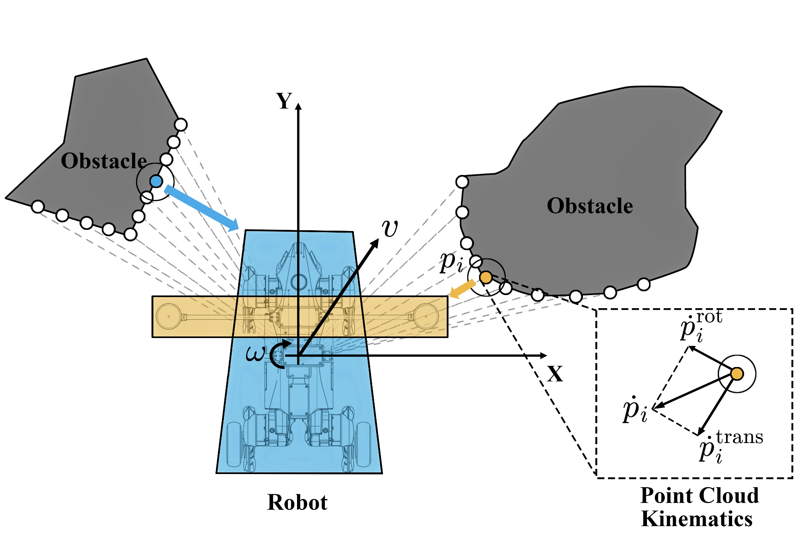
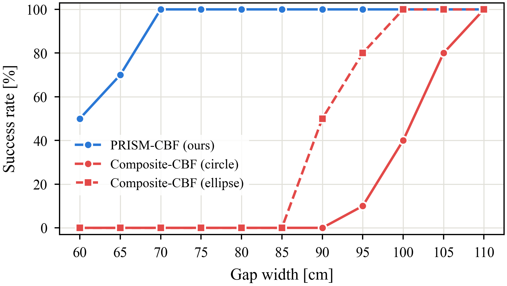
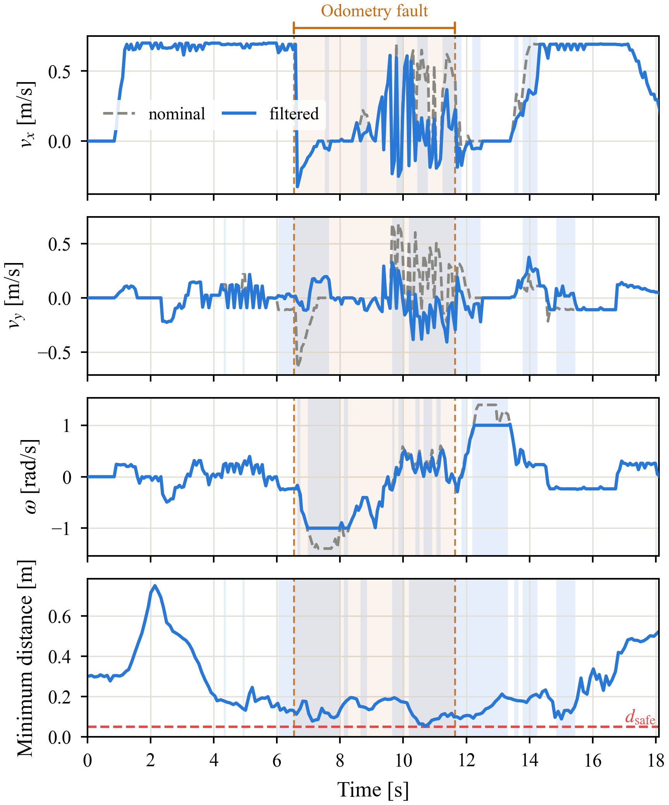
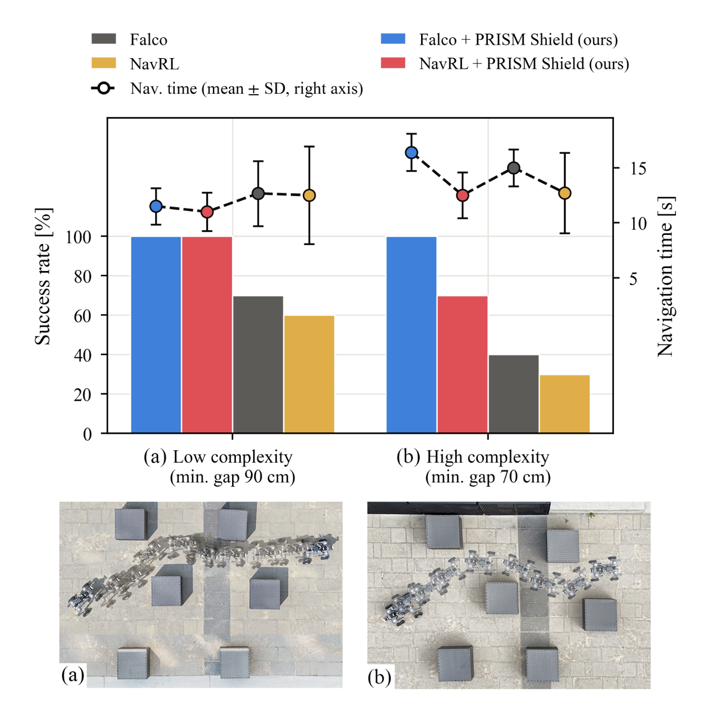

PRISM Shield: Point-Cloud Robot-Frame Inter-Sample Safety Filtering for Multi-Polygon Footprints
Abstract
Safe navigation through narrow passages requires collision avoidance methods that accurately account for the robot's true footprint while continuing to provide safety guarantees when localization is unreliable. Existing control barrier function (CBF) safety filters often approximate the robot footprint using conservative enclosing primitives, which limits traversability in confined spaces. We present PRISM Shield (Point-cloud Robot-frame Inter-Sample safety for Multi-polygon footprints), a CBF-based safety filter that operates directly on body-frame point clouds and polygonal robot footprints; nonconvex footprints are represented as unions of convex polygons.
We employ a solver-supervised encoder to estimate the distances and separating normals from point-cloud points to the robot footprint, and select the most critical points to construct the CBF safety constraints. PRISM Shield is validated through simulations and real-world experiments on a wheeled quadruped. The results show reduced inter-sample boundary violations, improved narrow-space traversability, and robustness to odometry failures. As a modular safety filter, PRISM Shield can be directly integrated with robot platforms using different navigation policies and motion constraints, providing accurate footprint-aware safety constraints without modifying the underlying navigation algorithm and thereby improving safe traversal in narrow, obstacle-dense environments.
The Issue with Current CBF
Method

Overview of the PRISM Shield framework. Onboard LiDAR measurements are processed by DUNE to estimate point-to-footprint distances and directions, which are used by the CBF filter to convert nominal commands into safe control inputs.
Exact distance, learned
The distance from a point to a convex polygon is the value of a small convex program. Solving one per LiDAR point per control tick is far too slow, so PRISM trains a network to emit that value and its gradient direction directly, in the footprint's own frame. Startup refuses to load a checkpoint whose baked-in geometry disagrees with the footprint in the config, so the model and the polygon can never silently drift apart.
Non-convex robots
A robot carrying a board across its back is not convex, and its convex hull would claim the empty wedges on either side. Instead the robot is a union of convex parts.
The union's safety condition is the intersection of
the per-part conditions, so every part contributes its own
rows to the same QP and nothing ever has to differentiate a
non-smooth min.
Body frame, no odometry
The footprint polygon and the raw Mid-360 cloud live in the same body frame, so the barrier needs no pose estimate at all. The nominal planner may localize however it likes; when its estimate drifts, the command it produces is wrong but the filter that vets that command is unaffected. Safety degrades gracefully instead of failing with the map.
DUNE: Deep Unfolded Neural Encoder
DUNE is adapted from NeuPAN [8]. It is a solver-supervised encoder: it is trained on the solutions of the point-to-polygon convex program, and at run time it predicts the distance and separating normal from every point in the cloud to each convex part of the footprint in a single pass.
On its own, DUNE occasionally over-reports the distance by a few millimetres (a). With the dual projection step, every estimate is at or below the true distance (b), so the barrier built from it can only shrink the safe set, never inflate it.

Signed error d̂ − d against true distance d, (a) DUNE alone and (b) DUNE with dual projection. The black line is the median.
Body-Frame Point-Cloud Kinematics

The footprint is a union of convex polygons (body and bar), and each obstacle point pi is measured against it directly. Inset: the point's velocity ṗi splits into a translational and a rotational part.
The barrier is written directly on the LiDAR points in the robot's body frame. For a static obstacle, a point pi moves relative to the robot only because the robot moves:
ṗi = −v − ω × pi
The first term is the translational part, and the second is the rotational part, which grows with the point's distance from the body origin. Both are linear in the command (v, ω), so each barrier becomes one linear row in the QP, with no pose estimate involved.
[8] R. Han et al., “NeuPAN: Direct point robot navigation with end-to-end model-based learning,” IEEE Transactions on Robotics, 41:2804–2824, 2025.
1. Narrow-gap traversability
A disc-inflated footprint is safe, but it is safe about a robot that does not exist. The Go2W's trapezoid is 0.70 m long and 0.43 m wide at the front; its circumscribing circle is 0.82 m across. Every gap between those two numbers is one the robot could physically pass and the filter refuses.
PRISM-CBF (ours)60 cm gap — passes through
Composite CBF (ellipse)90 cm gap — stalls at the entrance
Composite CBF (circle)100 cm gap — stalls at the entrance
The three runs above are single trials, chosen at each method's own limit: PRISM Shield goes through a gap 1.5× narrower than the one that stops the ellipse baseline and 1.7× narrower than the one that stops the circle.
Over 10 trials per width the picture is the same. PRISM Shield reaches a 100% success rate at 0.70 m; the composite CBF needs 1.00 m with an ellipse and 1.10 m with a circle. The 60 cm run shown here sits below that threshold — at 60 cm our own success rate is 50%, and the baselines are at zero.

[3] M. Harms, M. Jacquet, and K. Alexis,
“Safe quadrotor navigation using composite control barrier
functions,”
ICRA, 2025.
[5] V. N. Sankaranarayanan et al.,
“Reactive robot-centric safety for autonomous navigation in
constrained and dynamic environments,”
arXiv:2605.15782, 2026.
2. Robustness to odometry failures
We inject a drift fault into the odometry the nominal planner consumes. The estimate diverges from ground truth and the planner's commands go with it — but the barrier is computed from the live cloud in the body frame, so it keeps vetoing the commands that would actually hit something. This is the practical consequence of keeping the pose estimate out of the safety loop, and it is not available to any filter whose obstacle set lives in a world frame.
Without safety filterthe drifted command is executed as issued
PRISM-CBF (ours)same fault, same planner — clearance held

Nominal (grey) and filtered (blue) commands during the trial. While the odometry fault is active, the filter keeps overriding the corrupted commands, and the minimum distance to obstacles stays above dsafe throughout.
3. Adaptation to different motion constraints
The barrier rows are assembled from the footprint and the cloud; the actuation model enters only as the box the QP optimizes inside. Restricting that box turns the same filter into a different robot without retraining anything.
Hybrid, fixed-heading and unicycle, under the same unsafe command
The nominal command in the run shown is deliberately unsafe: v = 0.5 m/s with ω = 0.8 sin(1.25 t) rad/s, driven straight into the obstacles.
Each model finds a different way out of the same scene: the hybrid robot mixes all three inputs, the fixed-heading robot slides sideways, and the unicycle slows down and turns. Each keeps its clearance.

Top: the free inputs of each motion model. Bottom: nominal (grey dashed) and filtered commands for each model under the same unsafe command. The locked input stays at zero, and the minimum distance dmin never drops below dsafe.
4. Integration with nominal navigation policies
Dense obstacle course, played at 2×
PRISM Shield is a filter, not a planner: it takes whatever
/cmd_vel arrives and returns the nearest safe
command. That makes the nominal policy a free choice. We drop
it under two very different ones without changing a parameter
— Falco [6], a sampling-based
local planner, and NavRL [7], a learned
policy.
Neither was trained or tuned against the filter, and neither needs to know it is there: the filter engages only on the ticks where the nominal command would eat into the margin, and passes it through untouched otherwise.

Success rate (bars) and navigation time (dots, mean ± SD) with and without PRISM Shield. In the low-complexity course (minimum gap 90 cm) both planners reach 100% with the filter, up from 70% and 60%. In the high-complexity course (minimum gap 70 cm), Falco rises from 40% to 100% and NavRL from 30% to 70%. Bottom: overhead composites of the robot's path through each course.
[6] J. Zhang et al.,
“Falco: Fast likelihood-based collision avoidance with
extension to human-guided navigation,”
Journal of Field Robotics, 37(8):1300–1313, 2020.
[7] Z. Xu et al.,
“NavRL: Learning safe flight in dynamic environments,”
IEEE Robotics and Automation Letters, 2025.
5. Non-convex footprint with an attached bar
A bar bolted across the robot's back makes the footprint non-convex, and its convex hull would claim the two empty wedges beside the body. Modelled instead as a union of two convex parts, each part contributes its own rows to the same QP. The yaw term of every row uses the body-frame point, so an obstacle beside the bar's tip is far from the body origin and constrains ω hard even while the body itself is clear — that falls out of the kinematics, it is not a hand-added rotation penalty.
Doorwaythe bar clears the frame the body would have ignored
Obstacle fieldboth parts constrain the same QP throughout
BibTeX
@article{anonymous2026prismshield,
title = {PRISM Shield: Certified Body-Frame Point-Cloud Safety Filtering
for Polygonal Robot Footprints},
author = {Anonymous},
journal = {arXiv preprint arXiv:XXXX.XXXXX},
year = {2026}
}